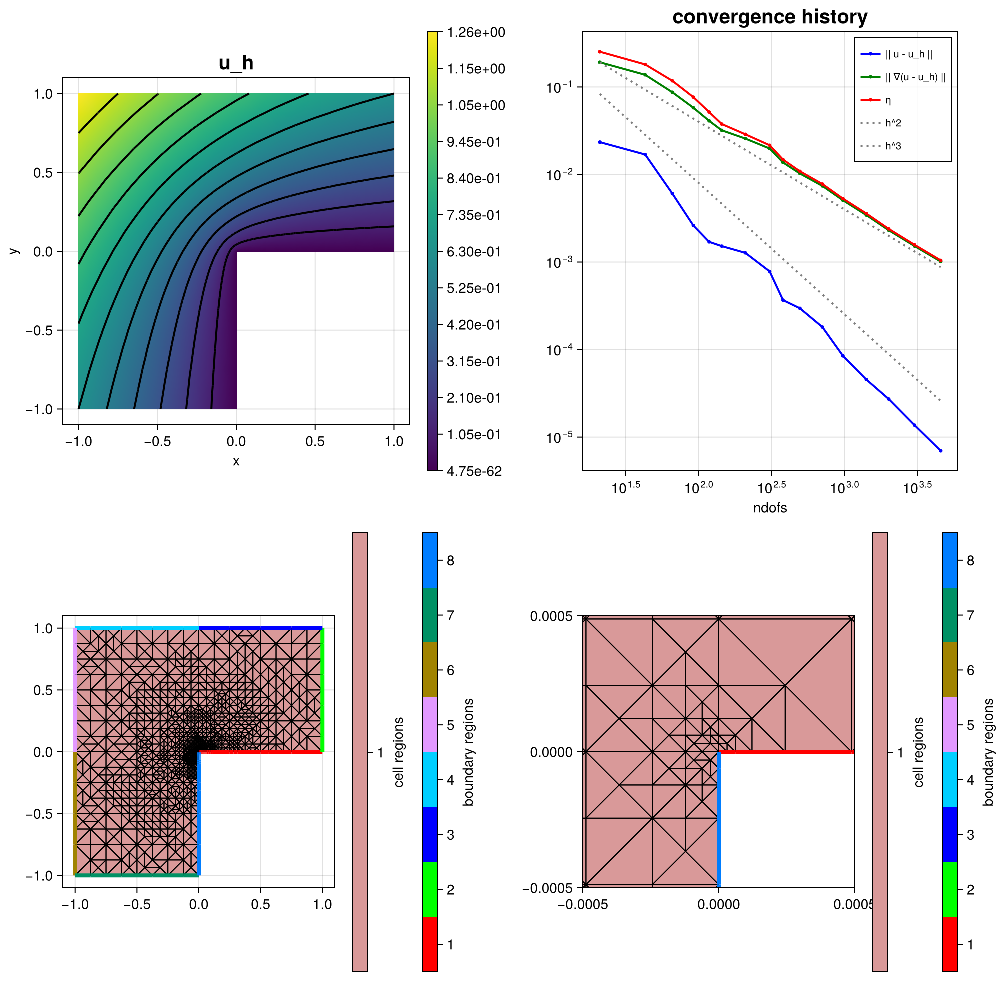

211 : Poisson L-shape Local Equilibrated Fluxes
This example computes a local equilibration error estimator for the $H^1$ error of some $H^1$-conforming approximation $u_h$ to the solution $u$ of some Poisson problem $-\Delta u = f$ on an L-shaped domain, i.e.
\[\eta^2(\sigma_h) := \| \sigma_h - \nabla u_h \|^2_{L^2(T)}\]
where $\sigma_h$ discretisates the exact $\sigma$ in the dual mixed problem
\[\sigma - \nabla u = 0 \quad \text{and} \quad \mathrm{div}(\sigma) + f = 0\]
by some local equilibration strategy, see reference below for details.
This examples demonstrates the use of low-level structures to assemble individual problems and a strategy to solve several small problems in parallel by use of non-overlapping node patch groups.
''A posteriori error estimates for efficiency and error control in numerical simulations'' Lecture Notes by M. Vohralik >Link<
The resulting mesh and error convergence history for the default parameters looks like:

module Example211_LshapeAdaptiveEQPoissonProblem
using ExtendableFEM
using ExtendableFEMBase
using ExtendableGrids
using ExtendableSparse
using GridVisualize
# exact solution u for the Poisson problem
function u!(result, qpinfo)
x = qpinfo.x
r2 = x[1]^2 + x[2]^2
φ = atan(x[2], x[1])
if φ < 0
φ += 2 * pi
end
result[1] = r2^(1 / 3) * sin(2 * φ / 3)
return nothing
end
# gradient of exact solution
function ∇u!(result, qpinfo)
x = qpinfo.x
φ = atan(x[2], x[1])
r2 = x[1]^2 + x[2]^2
if φ < 0
φ += 2 * pi
end
∂r = 2 / 3 * r2^(-1 / 6) * sin(2 * φ / 3)
∂φ = 2 / 3 * r2^(-1 / 6) * cos(2 * φ / 3)
result[1] = cos(φ) * ∂r - sin(φ) * ∂φ
result[2] = sin(φ) * ∂r + cos(φ) * ∂φ
return nothing
end
# kernel for exact error calculation
function exact_error!(result, u, qpinfo)
u!(result, qpinfo)
∇u!(view(result, 2:3), qpinfo)
result .-= u
result .= result .^ 2
return nothing
end
# kernel for equilibration error estimator
function eqestimator_kernel!(result, input, qpinfo)
σ_h, divσ_h, ∇u_h = view(input, 1:2), input[3], view(input, 4:5)
result[1] = norm(σ_h .- ∇u_h)^2 + divσ_h^2
return nothing
end
# unknowns for primal and dual problem
u = Unknown("u"; name = "u")
σ = Unknown("σ"; name = "equilibrated fluxes / dual stress")
# everything is wrapped in a main function
function main(; maxdofs = 4000, μ = 1, order = 2, nlevels = 16, θ = 0.5, Plotter = nothing, kwargs...)
# initial grid
xgrid = grid_lshape(Triangle2D)
# choose some finite elements for primal and dual problem (= for equilibrated fluxes)
FEType = H1Pk{1, 2, order}
FETypeDual = HDIVRTk{2, order}
# setup Poisson problem
PD = ProblemDescription("Poisson problem")
assign_unknown!(PD, u)
assign_operator!(PD, BilinearOperator([grad(u)]; factor = μ, kwargs...))
assign_operator!(PD, InterpolateBoundaryData(u, u!; regions = 2:7, bonus_quadorder = 4, kwargs...))
assign_operator!(PD, HomogeneousBoundaryData(u; regions = [1, 8]))
# define error estimator : || σ_h - ∇u_h ||^2 + || div σ_h ||^2
EQIntegrator = ItemIntegrator(eqestimator_kernel!, [id(σ), div(σ), grad(u)]; resultdim = 1, quadorder = 2 * order)
# setup exact error evaluations
ErrorIntegrator = ItemIntegrator(exact_error!, [id(u), grad(u)]; quadorder = 2 * order, kwargs...)
# refinement loop (only uniform for now)
NDofs = zeros(Int, 0)
NDofsDual = zeros(Int, 0)
ResultsL2 = zeros(Float64, 0)
ResultsH1 = zeros(Float64, 0)
Resultsη = zeros(Float64, 0)
sol = nothing
level = 0
while (true)
level += 1
# create a solution vector and solve the problem
FES = FESpace{FEType}(xgrid)
sol = solve(PD, FES)
push!(NDofs, length(view(sol[u])))
println("\n SOLVE LEVEL $level")
println(" ndofs = $(NDofs[end])")
# evaluate eqilibration error estimator and append it to sol vector (for plotting etc.)
local_equilibration_estimator!(sol, FETypeDual)
η4cell = evaluate(EQIntegrator, sol)
push!(Resultsη, sqrt(sum(view(η4cell, 1, :))))
# calculate L2 error, H1 error, estimator, dual L2 error and write to results
push!(NDofsDual, length(view(sol[σ])))
error = evaluate(ErrorIntegrator, sol)
push!(ResultsL2, sqrt(sum(view(error, 1, :))))
push!(ResultsH1, sqrt(sum(view(error, 2, :)) + sum(view(error, 3, :))))
println(" ESTIMATE")
println(" ndofsDual = $(NDofsDual[end])")
println(" estim H1 error = $(Resultsη[end])")
println(" exact H1 error = $(ResultsH1[end])")
println(" exact L2 error = $(ResultsL2[end])")
if NDofs[end] >= maxdofs
break
end
# mesh refinement
if θ >= 1 ## uniform mesh refinement
xgrid = uniform_refine(xgrid)
else ## adaptive mesh refinement
facemarker = bulk_mark(xgrid, view(η4cell, :), θ; indicator_AT = ON_CELLS)
xgrid = RGB_refine(xgrid, facemarker)
end
end
# plot
plt = GridVisualizer(; Plotter = Plotter, layout = (2, 2), clear = true, resolution = (1000, 1000))
scalarplot!(plt[1, 1], id(u), sol; levels = 11, title = "u_h")
plot_convergencehistory!(plt[1, 2], NDofs, [ResultsL2 ResultsH1 Resultsη]; add_h_powers = [order, order + 1], X_to_h = X -> order * X .^ (-1 / 2), ylabels = ["|| u - u_h ||", "|| ∇(u - u_h) ||", "η"])
gridplot!(plt[2, 1], xgrid; linewidth = 1)
gridplot!(plt[2, 2], xgrid; linewidth = 1, xlimits = [-0.0005, 0.0005], ylimits = [-0.0005, 0.0005])
# print/plot convergence history
print_convergencehistory(NDofs, [ResultsL2 ResultsH1 Resultsη]; X_to_h = X -> X .^ (-1 / 2), ylabels = ["|| u - u_h ||", "|| ∇(u - u_h) ||", "η"])
return sol, plt
end
# this function computes the local equilibrated fluxes
# by solving local problems on (disjunct groups of) node patches
function local_equilibration_estimator!(sol, FETypeDual)
# needed grid stuff
xgrid = sol[u].FES.xgrid
xCellNodes::Array{Int32, 2} = xgrid[CellNodes]
xCellVolumes::Array{Float64, 1} = xgrid[CellVolumes]
xNodeCells::Adjacency{Int32} = atranspose(xCellNodes)
nnodes::Int = num_sources(xNodeCells)
# get node patch groups that can be solved in parallel
group4node = xgrid[NodePatchGroups]
# init equilibration space (and Lagrange multiplier space)
FESDual = FESpace{FETypeDual}(xgrid)
xItemDofs::Union{VariableTargetAdjacency{Int32}, SerialVariableTargetAdjacency{Int32}, Array{Int32, 2}} = FESDual[CellDofs]
xItemDofs_uh::Union{VariableTargetAdjacency{Int32}, SerialVariableTargetAdjacency{Int32}, Array{Int32, 2}} = sol[u].FES[CellDofs]
# append block in solution vector for equilibrated fluxes
append!(sol, FESDual; tag = σ)
# partition of unity and their gradients = P1 basis functions
POUFES = FESpace{H1P1{1}}(xgrid)
POUqf = QuadratureRule{Float64, Triangle2D}(0)
# quadrature formulas
qf = QuadratureRule{Float64, Triangle2D}(2 * get_polynomialorder(FETypeDual, Triangle2D))
weights::Array{Float64, 1} = qf.w
# some constants
offset::Int = sol[u].offset
div_penalty::Float64 = 1.0e5 # divergence constraint is realized by penalisation
bnd_penalty::Float64 = 1.0e60 # penalty for non-involved dofs of a group
maxdofs::Int = max_num_targets_per_source(xItemDofs)
maxdofs_uh::Int = max_num_targets_per_source(xItemDofs_uh)
# redistribute groups for more equilibrated thread load (first groups are larger)
maxgroups = maximum(group4node)
groups = Array{Int, 1}(1:maxgroups)
for j::Int in 1:floor(maxgroups / 2)
a = groups[j]
groups[j] = groups[2 * j]
groups[2 * j] = a
end
X = Array{Array{Float64, 1}, 1}(undef, maxgroups)
function solve_patchgroup!(group)
# temporary variables
graduh = zeros(Float64, 2)
coeffs_uh = zeros(Float64, maxdofs_uh)
Alocal = zeros(Float64, maxdofs, maxdofs)
blocal = zeros(Float64, maxdofs)
# init system
A = ExtendableSparseMatrix{Float64, Int64}(FESDual.ndofs, FESDual.ndofs)
b = zeros(Float64, FESDual.ndofs)
# init FEBasiEvaluators
FEE_∇φ = FEEvaluator(POUFES, Gradient, POUqf)
FEE_xref = FEEvaluator(POUFES, Identity, qf)
FEE_∇u = FEEvaluator(sol[u].FES, Gradient, qf)
FEE_div = FEEvaluator(FESDual, Divergence, qf)
FEE_id = FEEvaluator(FESDual, Identity, qf)
idvals = FEE_id.cvals
divvals = FEE_div.cvals
xref_vals = FEE_xref.cvals
∇φvals = FEE_∇φ.cvals
# find dofs at boundary of current node patches
# and in interior of cells outside of current node patch group
is_noninvolveddof = zeros(Bool, FESDual.ndofs)
outside_cell::Bool = false
for cell in 1:num_cells(xgrid)
outside_cell = true
for k in 1:3
if group4node[xCellNodes[k, cell]] == group
outside_cell = false
break
end
end
if (outside_cell) # mark interior dofs of outside cell
for j in 1:maxdofs
is_noninvolveddof[xItemDofs[j, cell]] = true
end
end
end
for node in 1:nnodes
if group4node[node] == group
for c in 1:num_targets(xNodeCells, node)
cell = xNodeCells[c, node]
# find local node number of global node z
# and evaluate (constant) gradient of nodal basis function phi_z
localnode = 1
while xCellNodes[localnode, cell] != node
localnode += 1
end
FEE_∇φ.citem[] = cell
update_basis!(FEE_∇φ)
# read coefficients for discrete flux
for j in 1:maxdofs_uh
coeffs_uh[j] = sol.entries[offset + xItemDofs_uh[j, cell]]
end
# update other FE evaluators
FEE_∇u.citem[] = cell
FEE_div.citem[] = cell
FEE_id.citem[] = cell
update_basis!(FEE_∇u)
update_basis!(FEE_div)
update_basis!(FEE_id)
# assembly on this cell
for i in eachindex(weights)
weight = weights[i] * xCellVolumes[cell]
# evaluate grad(u_h) and nodal basis function at quadrature point
fill!(graduh, 0)
eval_febe!(graduh, FEE_∇u, coeffs_uh, i)
# compute residual -f*phi_z + grad(u_h) * grad(phi_z) at quadrature point i ( f = 0 in this example !!! )
temp2 = div_penalty * sqrt(xCellVolumes[cell]) * weight
temp = temp2 * dot(graduh, view(∇φvals, :, localnode, 1))
for dof_i in 1:maxdofs
# right-hand side for best-approximation (grad(u_h)*phi)
blocal[dof_i] += dot(graduh, view(idvals, :, dof_i, i)) * xref_vals[1, localnode, i] * weight
# mass matrix Hdiv
for dof_j in dof_i:maxdofs
Alocal[dof_i, dof_j] += dot(view(idvals, :, dof_i, i), view(idvals, :, dof_j, i)) * weight
end
# div-div matrix Hdiv * penalty (quick and dirty to avoid Lagrange multiplier)
blocal[dof_i] += temp * divvals[1, dof_i, i]
temp3 = temp2 * divvals[1, dof_i, i]
for dof_j in dof_i:maxdofs
Alocal[dof_i, dof_j] += temp3 * divvals[1, dof_j, i]
end
end
end
# write into global A and b
for dof_i in 1:maxdofs
dofi = xItemDofs[dof_i, cell]
b[dofi] += blocal[dof_i]
for dof_j in 1:maxdofs
dofj = xItemDofs[dof_j, cell]
if dof_j < dof_i # use that Alocal is symmetric
_addnz(A, dofi, dofj, Alocal[dof_j, dof_i], 1)
else
_addnz(A, dofi, dofj, Alocal[dof_i, dof_j], 1)
end
end
end
# reset local A and b
fill!(Alocal, 0)
fill!(blocal, 0)
end
end
end
# penalize dofs that are not involved
for j in 1:FESDual.ndofs
if is_noninvolveddof[j]
A[j, j] = bnd_penalty
b[j] = 0
end
end
# solve local problem
return A \ b
end
# solve equilibration problems on vertex patches (in parallel)
Threads.@threads for group in groups
grouptime = @elapsed begin
@info " Starting equilibrating patch group $group on thread $(Threads.threadid())... "
X[group] = solve_patchgroup!(group)
end
@info "Finished equilibration patch group $group on thread $(Threads.threadid()) in $(grouptime)s "
end
# write local solutions to global vector (sequentially)
for group in 1:maxgroups
view(sol[σ]) .+= X[group]
end
return
end
endThis page was generated using Literate.jl.